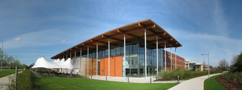

Welcome to the OpenRISC Conference 2013
The second annual OpenRISC project conference - ORCONF 2013.
This is a conference which aims to bring together those involved with open source embedded systems development, from the transistor level up to Linux userspace and beyond.
The event will run from 2pm on Saturday, October 5 to early afternoon on Sunday, October 6.
Lunch will be available from 12:30 on Saturday. The sessions will run until the evening, and be followed by dinner in a local pub. Sessions will resume Sunday morning and conclude after lunch in the early afternoon. This arrangement should allow people to travel on Saturday morning and return home Sunday evening.
ORCONF 2013 group photo, Press: OptimSoC blog,Olof's blog
Previous editions: latest 2012
Conference Location
The conference was held at the University of Cambridge Computer Laboratory in Cambridge, England. A big thank you to David Greaves and the Computer Labs for hosting us.
The address is: Room FW11, Cambridge University Computer Laboratory, 15 JJ Thomson Avenue, CB3 0FD Cambridge, United Kingdom
Conference Schedule
A playlist with all of the videos from ORCONF 2013 can be found on YouTube.
| Time | Presentation | Video | Slides, etc. |
|---|---|---|---|
| 1:45pm | A SystemC model of a multicore OpenRISC with power annotation (David Greaves). | Video | |
| 2:30pm | OpTiMSoC - an OpenRISC-based Manycore System-on-Chip (Stefan Wallentowitz). | Video | |
| 3:15pm | BERI: A Bluespec Extensible RISC Implementation. The development of a full-featured 64-bit MIPS processor for hardware-software co-design targeting rapid and robust extensibility (Jon Woodruff). | Video | |
| 4:15pm | Hands off the cores! Hands-on withORPSoCv3 - A walkthrough to get started with using ORPSoCv3 (Olof Kindgren and others). | Video | |
| 5:00pm | ORPSoC on the DE0-nano. Based on the workshop first given at [chiphack.org ChipHack], but upgraded for ORPSoCv3. DE0-nano's will be provided, but feel free to bring your own (Julius Baxter to lead). |
Sunday:
| Time | Presentation | Video | Slides, etc. |
|---|---|---|---|
| 9:00am | mor1kx progress report and demo (Stefan Kristiansson and Julius Baxter). | Video | |
| 9:45am | Defining a Domain Specific Language for the Configuration of SoPCs Based on the OpenRISC Platform (Martin Schulze). | Video | |
| 10:15am | OpenRISC for space applications and EurySpace SoC (Guillaume Rembert) | Video, Slides | |
| 10:30am | OpenOCD and GDB for OpenRISC (Franck Jullien) | Video | |
| 10:45am | Modifying the OR1200 for ETH Zürich (Davide Rossi) | Video | |
| 11:30am | OpenRISC 2000. A collaborative session to firm up the architecture specification (Jeremy Bennett to chair). | Video | Notes |
| 12:15pm | Update and discussion on the OpenRISC toolchain, including "do we need ABIv2" (Stefan Kristiansson to lead). | Video | |
| 1:00pm | A Couple of Things at Lightning Speed (Julius Baxter) | Video | |
| 1:00pm | Verilator Update (Jeremy Bennett) | Video |
Talk and workshop abstracts
A SystemC model of a multicore OpenRISC with power annotation
David Greaves, Cambridge University Computer Laboratory
David has developed a SystemC model of a multicore OpenRISC design, which has been used for teaching at the University for some years. This model is unusual in having annotations for power usage, so it can give estimates of power consumption as well as system performance when run.
Defining a Domain Specific Language for the Configuration of SoPCs Based on the OpenRISC Platform
Martin Schulze
After some words about my motivation I will give a demo of the current state of the project, the eclipse editor and a simple solution to the question how to integrate into ORPSoCv2 (yes, it's v2 for now).
OpTiMSoC - an OpenRISC-based Manycore System-on-Chip
Stefan Wallentowitz, Technical University of Munich
ORPSoC on the DE0-nano
Julius Baxter
This is a workshop first given by Julius Baxter at[chiphack.org ChipHack], showing how to bring up ORPSoC on the DE0-nano. A number of DE0-nano's will be available, but feel free to bring your own.
Partipants are encouraged to read the workshop requirements and perform the tool installation prior to arriving ORCONF. Please contact Julius Baxter via IRC, the mailing lists or directly (see email below) if you experience problems with your preparation.
mor1kx progress report and demo
Stefan Kristiansson and Julius Baxter
Hands off the cores! Hands-on with ORPSoCv3
Olof Kindgren and others
A walkthrough to get started with using ORPSoCv3. This will precede the workshop.
OpenRISC 2000
Jeremy Bennett
This has been bouncing around for a couple of years, and it would be good to start to get some more concrete direction. Implementing OpenRISC (in silicon and in simulation) is a popular undergraduate project, and defining OR2K now might give a chance for someone to implement it during the coming academic year.
Update and discussion on the OpenRISC toolchain
Stefan Kristiansson
This year has been a lot quieter on the toolchain side than last year, but there are a couple of things of interest that could be discussed. At least one thing I have in mind is our ABI. There have been a couple of occurrences of projects that abuse the C standard for varargs, hurting us "small, different guys".
There are a couple of other things in our ABI that aren't all perfect, so maybe some venting of those issues and whether we need an "ABI v2.0" would be something we should consider.
Bug squashing session
We did this last year as the final session after lunch on Sunday. People joined in for as long as they could until their flights/trains left. It's a good chance to clear up Bugzilla once each year.